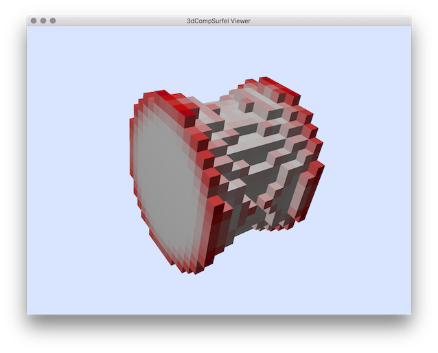

Computes generic scalar surfel data comparisons (squared error) (given from an input data file and from a reference one).
Usage: 3dCompSurfelData [input] [reference]
Allowed options are:
-h [ --help ] display this message
-i [ --input ] arg input file: sdp (sequence of discrete
points with attribute)
-r [ --reference ] arg input reference file: sdp (sequence of
discrete points with attribute)
-l [ --compAccordingLabels ] apply the comparisons only on points with
same labels (by default fifth colomn)
-a [ --drawSurfelAssociations ] Draw the surfel association.
-o [ --fileMeasureOutput ] arg specify the output file to store (append)
the
error stats
else the result is given to
-n [ --noWindows ] Don't display Viewer windows.
-d [ --doSnapShotAndExit ] arg save display snapshot into file. Notes that
the camera setting is set by default
according the last saved configuration (use
SHIFT+Key_M to save current camera setting
in the Viewer3D).
--fixMaxColorValue arg fix the maximal color value for the scale
error display (else the scale is set from
the maximal value)
--labelIndex arg set the index of the label (by default set
to 4)
--SDPindex arg specify the sdp index (by default 0,1,2,3).
Example:
To use this tools we need first to have two differents surfel set with an attribute to be compared. We can use for instance the curvature from the sample file of DGtal/examples/samples/cat10.vol:
# generating another input vol file using tutorial example (eroded.vol):
$ $DGtal/build/examples/tutorial-examples/FMMErosion
# Estimate curvature using other DGtalTools program:
$ 3dCurvatureViewer -i $DGtal/examples/samples/cat10.vol -r 3 --exportOnly -d curvatureCat10R3.dat
$ 3dCurvatureViewer -i eroded.vol -r 3 --exportOnly -d curvatureCat10ErodedR3.dat
Now we compare the different curvature values from the two shapes:
./visualisation/3dCompSurfelData -i curvatureCat10ErodedR3.dat -r curvatureCat10R3.dat --fixMaxColorValue 1.0 -o statMeasures.dat
You should obtain such a visualisation:

resulting visualisation of curvature comparison.
- See also
- 3dCompSurfelData.cpp 3dCurvatureViewer